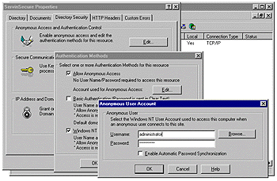

|
| ||
|
| ||
Tom Moran
Jeff Sandquist
Microsoft Corporation
February 22, 1999
The following article was originally published in the Site Builder Network Magazine "Servin' It Up" column (now MSDN Online Voices "Servin' It Up" column).
We're back. The highly anticipated Part 2 of this article is now here. And to think you were going to spend the evening watching your cat wash itself.
This month, Jeff Sandquist and I finish off our Active Directory Services Interfaces (ADSI) application. If you're coming in a bit late, that's okay; just see Part 1 of this series. Last month, we validated a user as a member of a privileged group. Then we displayed a form that populated a list box with the usernames of everyone in a specific user group. This form allowed us to pick a user, and pick privileges for that user's new virtual directory. Now we'll take the data from the form and create a new virtual directory on the Web server, define it as an application, give the option to turn on script permissions, and assign the appropriate permissions on the folder. Jeff Sandquist will lead us through these efforts.
We also have a major, tearful, earth-shattering announcement to make at the end of this article. Clinton, O.J., Clemens -- it all pales in comparison. I'm sure the AP will pick this up, but you'll see it first. Read on.
Last month, our form resided in a virtual directory called Servin. We were able to perform the required operations using the Internet Information Server (IIS) Security context of IUSR_<Machine Name>. To create directories and assign permissions, we need to be an administrator.
One way of doing this is to move the IUSR_<Machine Name> account to the administrator's group. A better way, though, is to create a new virtual directory on the Web server (we will call ours ServinSecure) and set it to operate under the context of the Administrator rather than IUSR_<machine name>. Our form will reside in the Servin directory, and the processor of our form will reside in a directory called ServinSecure.
To create a new virtual directory, start the Microsoft Management Console (MMC) and right-click Default Web Site. Choose New/Virtual Directory. Create a virtual directory named "ServinSecure" (without the quotation marks). You will also need to supply a physical path to a previously created folder on your Web server's file system. Once you've created the virtual directory, right-click on the newly created virtual directory in MMC, and select Properties to display the properties for the virtual directory.
Choose the Directory Security tab, select the Edit button next to Enable anonymous …, and edit the authentication methods for this resource. A dialog box with the title Authentication Methods will appear. Select the Edit button next to Account used for Anonymous Access. A final dialog box will appear with the title Anonymous User Account. Change the default value for Username from IUSR_<machine name> to administrator, deselect password synchronization, and supply the password for the administrator's account. Select OK on each of the remaining dialog boxes to apply the change.
Here is what the dialog boxes will look like:

Let's get on to the code. We'll define some variables for our application. Create an Active Server Pages (ASP) file called CreateDirectory.asp, and insert the following code:
<%@ Language=VBScript %> <% Option Explicit %> <HTML> <HEAD> <META NAME="GENERATOR" Content="Microsoft Visual Studio 6.0"> </HEAD> <BODY> <% Dim strVirtualDirectoryName 'IIS Virtual Directory Name Dim bolInProcessApplication 'IIS In Process Application Flag Dim objIIS 'ADSI IIS Object Dim strVirtualDirectoryPath 'IIS Virtual Directory Path Dim objFileSystem 'VBScript FileSystemObject Dim strOwner 'NT Folder Owner Dim objVirtualDirectory 'ADSI IIS Virtual Directory Object Dim bolScriptPermissions 'IIS script permissions flag Dim strHTTPReferer 'IIS Referrer Page Dim strServerName 'NT local machine name Dim objWSH 'Windows Scripting Host Object Dim objRTC 'Return Dim strACLCommand 'Command Line string to set ACLs
We want to ensure that the user came from our form and is not spoofing our server. We'll retrieve the HTTPReferer server variable and server name to test this. You could do a lot of checking here; the test we're using is not necessarily foolproof. For a top-notch article on securing sites, check out Easy Application State Securely  by Dmitry Khanine.
by Dmitry Khanine.
Insert the following just below your last bit of code.
strHTTPReferer = Request.ServerVariables("HTTP_REFERER")
strServerName = Request.ServerVariables("SERVER_NAME")
' Did we come from our form? If not then deny access
If strHTTPReferer <> "http://" & strServerName
& "/Servin/Default.asp" then
Response.Write("Access Denied")
Response.End
End If
Now that our page has confirmed that our user is posting the results from our form, we'll retrieve the values for the Virtual Directory, the Owner, and the Script Permissions flag from our form. Note how we change the retrieved value of checkboxScript to True if it has been selected or to false if it is not selected. Insert the following below your last bit of code.
strVirtualDirectoryName = Request.Form("textVirtualDirectory")
strOwner = Request.Form("selectOwner")
If Request.Form("checkboxScript") = "on" Then
bolScriptPermissions = "True"
Else
bolScriptPermissions = "False"
End If
We need to confirm whether the IIS application exists. Using the IIS Admin object, we check to see whether the application already exists and warn the user accordingly.
' Does this IIS application already exist in the metabase?
On Error Resume Next
Set objIIS = GetObject("IIS://localhost/W3SVC/1/Root/"
& strVirtualDirectoryName)
If Err.Number = 0 Then
Response.Write ("An application with this name
already exists. Click ")
Response.Write ("<A href=http:// "
& strServerName & " /servin/default.asp>")
Response.Write ("here</A> to choose a different name.")
Response.End
End If
Set objIIS = Nothing
Now we'll use IIS administration objects to create the IIS application in the metabase.
'Create the IIS application
Set objIIS = GetObject("IIS://localhost/W3SVC/1/Root")
strVirtualDirectoryPath = objIIS.Path
& "\" & strVirtualDirectoryName
Using the Visual Basic® Scripting Edition (VBScript) FileSystemObject object, we'll test to see whether the folder exists in the file system; if does not exist, we'll create it with the CreateFolder command.
Set objFileSystem = Server.
CreateObject("Scripting.FileSystemObject")
'Test to see if the folder exists in the filesystem.
' If not, create it
On Error Resume Next
Set Folder = objFileSystem.GetFolder(strVirtualDirectoryPath)
If Hex(Err.number) = "4C" Then
objFileSystem.CreateFolder strVirtualDirectoryPath
End If
Set objFileSystem = Nothing
Using the IIS Administration object (which we use a lot in this article), we turn on script permissions (if the user selected this option) and define the virtual directory as an in-process application.
'Create the folder in the filesystem
Set objVirtualDirectory = objIIS.Create("IISWebVirtualDir",
strVirtualDirectoryName)
objVirtualDirectory.AccessScript = bolScriptPermissions
objVirtualDirectory.Path = strVirtualDirectoryPath
objVirtualDirectory.SetInfo
objVirtualDirectory.AppCreate bolInProcessApplication
Now on to the magic: setting the permissions. We really thought this was going to be the easy part. Unfortunately, there is no object in ADSI to set the permissions for a virtual directory. Panic swept in, along with a sick feeling. (Or was this being caused by an overindulgence in Thai food last night?)
Searching the 15seconds.com ADSI list server for information revealed a post referencing the DOS CACLS.EXE file  and using it from a DOS CMD file.
and using it from a DOS CMD file.
We figured we could write a Visual Basic wrapper for this functionality and roll it up in a custom component (an article idea for next month), but there must be a quicker way!
We continued our search in the Windows Scripting Host FAQ by Ian Morris and found a few lines of code to call a DOS command from Windows Scripting Host.
We attempted to call the CACLS.exe from the ASP file using the Windows Scripting host, and our page did not execute. The application failed. Why was this happening? We stepped through the command from a DOS command prompt and realized that the CACLS.EXE command was waiting for us to confirm the operation with a Y for Yes. There must be a way to force Yes as the default.
Checking the command line options did not show any hidden switch. At this point, opening the Web browser, visiting Support Online and searching for CACLS.EXE seemed a prudent thing to do.
We were thrilled to find the article Q135268 : How to Use CACLS.EXE in a Batch File  . Ahh, good old DOS redirection. Piping a Y to the CACLS.exe will force the Yes.
. Ahh, good old DOS redirection. Piping a Y to the CACLS.exe will force the Yes.
Here is the code we used to build the command string and to call the Windows Scripting Host shell from the ASP file.
'Set Change Permissions for the developer using CACLS.exe
strACLCommand = "cmd /c echo y| CACLS "
strACLCommand = strACLCommand & strVirtualDirectoryPath
strACLCommand = strACLCommand & " /g "
& strOwner & ":C"
Set objWSH = Server.CreateObject("WScript.Shell")
objRTC = objWSH.Run (strACLCommand , 0, True)
Set objWSH = Nothing
This probably is not the most scalable solution. A custom component would serve you better for large-scale applications. If you want one, Software Artisans has a free component  that will allow you to change the permissions on the folders through its object model. (It also has a lot of other cool features, such as importing/exporting images to blobs, manipulating .ini files, and more.)
that will allow you to change the permissions on the folders through its object model. (It also has a lot of other cool features, such as importing/exporting images to blobs, manipulating .ini files, and more.)
Our final code displays a confirmation of the actions we took.
Response.Write("<B>Web Application Created Sucessfully</B>
<BR>")
Response.Write("Path : "& strVirtualDirectoryPath & "<BR>")
Response.Write("Script Permissions : "& bolScriptPermissions &
"<BR>")
Response.Write( strOwner & " has been granted
change permissions<BR>")
%>
</BODY>
</HTML>
That's it, folks. The big thing to remember is to use multiple resources when searching for the solution to a problem. List servers, FAQs, and the Microsoft Knowledge Base were instrumental in pulling this article together.
Now for the news. Due to the overwhelming response we've received on each of the ASP columns, we've decided to focus this column solely on that technology. In anticipation of that change, we have brought in the eminently capable Jeff Sandquist. The tearful part? Tom Moran will be leaving Servin' It Up -- but don't be surprised if you see him around in the future.
Tom Moran is a program manager with Microsoft Developer Support and spends a lot of time hanging out with the MSDN Online Web Workshop folks.
Jeff Sandquist (one of Microsoft's finest Canucks) is a member of Developer Support's Active Server Pages Escalation Team and Commander in Chief of the Visual InterDev MVP program.
program.
Did you find this material useful? Gripes? Compliments? Suggestions for other articles? Write us!
© 1999 Microsoft Corporation. All rights reserved. Terms of use.